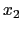
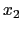
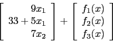
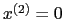

The code snippets used in this section are from the example code algorithmicDiffTest.cpp in the algorithmicDiffTest folder in the examples folder. The code is based on the following example.
The OSiL representation of the instance (20)-(23) is given in Appendix 14.3. This example is designed to illustrate several features of OSiL. Note that in constraint (21) the constant 33 appears in the <con> element corresponding to this constraint and the constant 105 appears as a <number> OSnL node in the <nonlinearExpressions> section. This distinction is important, as it will lead to different treatment by the code as
documented below. There are no nonlinear terms in the instance that involve variable  The terms
The terms  in (21) and in (22) are expressed in the objectives and <linearConstraintCoefficients>
sections, respectively, and will again receive special treatment by the code. However, the term
in (21) and in (22) are expressed in the objectives and <linearConstraintCoefficients>
sections, respectively, and will again receive special treatment by the code. However, the term  in (21),
along with the term , is expressed in the <nonlinearExpressions> section. Variables
in (21),
along with the term , is expressed in the <nonlinearExpressions> section. Variables  and  do not appear in any nonlinear terms. However, in the OSInstance API, variable
and  do not appear in any nonlinear terms. However, in the OSInstance API, variable  appears in the <nonlinearExpressions> section; hence it is treated as a nonlinear variable for purposes of algorithmic differentiation. Variable never appears in the <nonlinearExpressions> section and is therefore treated as a linear variable and not used in any algorithmic differentiation calculations. Variables that do not appear in the <nonlinearExpressions> are never part of the algorithmic differentiation calculations.
appears in the <nonlinearExpressions> section; hence it is treated as a nonlinear variable for purposes of algorithmic differentiation. Variable never appears in the <nonlinearExpressions> section and is therefore treated as a linear variable and not used in any algorithmic differentiation calculations. Variables that do not appear in the <nonlinearExpressions> are never part of the algorithmic differentiation calculations.
Ignoring the nonnegativity constraints, instance (20)-(23) defines a mapping from to
|  |
The OSiL representation for the instance in (20)-(23) is read into an in-memory OSInstance object as follows (we assume that osil is a string with the OSiL instance)
osilreader = new OSiLReader(); osinstance = osilreader->readOSiL( &osil);There is a method in the OSInstance class, initForAlgDiff() that is used to initialize the nonlinear data structures. A call to this method
osinstance->initForAlgDiff( );will generate a map of the indices of the nonlinear variables. This is critical because the algorithmic differentiation only operates on variables that appear in the <nonlinearExpressions> section. An example of this map follows.
std::map<int, int> varIndexMap;
std::map<int, int>::iterator posVarIndexMap;
varIndexMap = osinstance->getAllNonlinearVariablesIndexMap( );
for(posVarIndexMap = varIndexMap.begin(); posVarIndexMap
!= varIndexMap.end(); ++posVarIndexMap){
std::cout << "Variable Index = " << posVarIndexMap->first << std::endl ;
}
The variable indices listed are 0, 1, and 3. Variable 2 does not appear in the <nonlinearExpressions> section and is not included in varIndexMap. That is,
Once the nonlinear structures are initialized it is possible to take derivatives using algorithmic differentiation. Algorithmic differentiation is done using either a forward or reverse sweep through an expression tree (or operation sequence) representation of  . The two key public algorithmic differentiation methods in the OSInstance class are forwardAD and reverseAD. These are actually generic ``wrappers'' around the corresponding CppAD methods with the same signature. This keeps the OS API public methods independent of any underlying algorithmic differentiation package.
. The two key public algorithmic differentiation methods in the OSInstance class are forwardAD and reverseAD. These are actually generic ``wrappers'' around the corresponding CppAD methods with the same signature. This keeps the OS API public methods independent of any underlying algorithmic differentiation package.
The forwardAD signature is
std::vector<double> forwardAD(int k, std::vector<double> vdX);where
funVals = osinstance->forwardAD(0, x0);Since there are three components in the vector defined by (24), the return value funVals will have three components. For an input vector,
x0[0] = 1; // the value for variable x0 in function f x0[1] = 5; // the value for variable x1 in function f x0[2] = 5; // the value for variable x3 in function fthe values returned by osinstance->forwardAD(0, x0) are 1, -63.15, and 1.6094, respectively. The Jacobian of the example in (24) is
x1[0] = 0; x1[1] = 0; x1[2] = 1; osinstance->forwardAD(1, x1);
Now calculate second derivatives. To illustrate we use the results in (17)-(19) and calculate
x1[0] = 1; x1[1] = 0; x1[2] = 1; osinstance->forwardAD(1, x1);Next set  and do a second-order forward sweep.
std::vector<double> x2( n); x2[0] = 0; x2[1] = 0; x2[2] = 0; osinstance->forwardAD(2, x2);This call returns the vector of values
| 0 | |||
 |
0 | ||
| 0 | |||
The reverseAD signature is
std::vector<double> reverseAD(int k, std::vector<double> vdlambda);where vdlambda is a vector of Lagrange multipliers. This method returns a vector in the range space. If a reverse sweep of order
![\begin{displaymath}\hbox{\rm where}\ f(x) :=
\left[
\begin{array}{r}
f_1(x) \\
f_2(x) \\
f_3(x)
\end{array} \right]\end{displaymath}](img90.png)